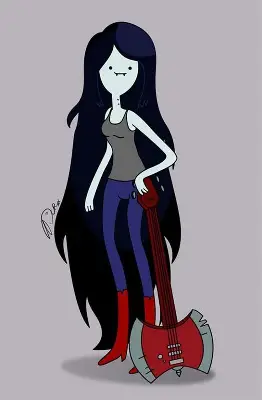
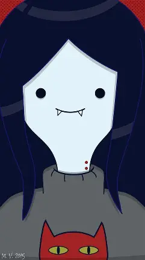

Marceline es un personaje principal en la serie de televisión "Hora de Aventura", es una vampira y una musicista talentosa,
es conocida por su personalidad independiente y su amor por la música, ademas de su habilidad para volar y transformarse en diferentes formas
Marceline es una chica de piel pálida y cabello largo y oscuro, normalmente lleva ropa casual y a menudo se le ve con su guitarra en forma de hacha
 | Habilidades | Volar | Transformación |
|---|---|---|
| Frases conocidas | ¡Vamos a tocar! | ¡La música es mi vida! |
| Ocupación | Musicista | Aventurera |